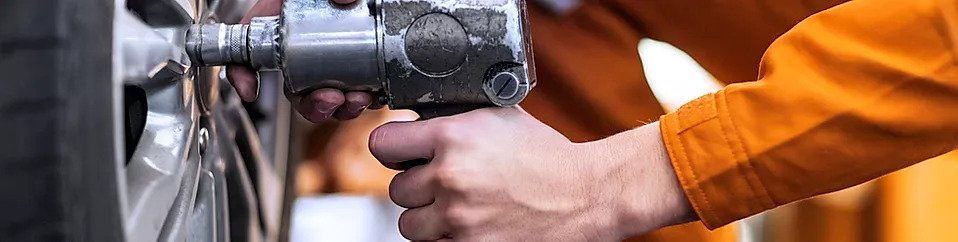

Call us on
0151 333 1800


Tyres
We stock an excellent range of value for money tyres that can be fitted while you wait! Or we can order any of the top brand names, bespoke to your requirements. Pay us a visit at Clever Garage!
TYRES
We stock and fit a range of quality, value for money tyres, that provide performance, reliability and excellent mileage over the lifetime of the tyre.
- Car tyres
- 4x4's
- Van tyres
All tyres that we supply are new, with a full guarantee and include the cost of; fitting, a new valve, balancing, and environmentally safe disposal of your old tyre(s).
Tyre Care:
- Ensuring that your tyres have the correct pressure will increase both the life of the tyre and your fuel economy.
- A legal requirement is that the depth of tread on your tyres should be at least 1.6mm, if you are unsure then we can provide a FREE check of the depth of tread for you, along with a visual inspection of the tyres or you can check the tread yourself using the method showed in the video below.
Puncture repairs:
- Puncture repairs can only be carried out on the central area of the tyre and must meet BS AU159 standards.
- Damage or punctures to the sidewalls cannot be repaired and only one repair is allowed on V rated (or above) tyres.
TRACKING & ALIGNMENT
It is important that your wheel alignment / tracking is checked on a yearly basis, to ensure the correct handling, safety and stopping distance of your vehicle.
Correct wheel alignment will significantly increase the life of the tyres, increase fuel efficiency and provide a smoother more comfortable ride.
Any unusual visual wear on the inside or outside shoulders of the tyres is an indication that the alignment is incorrect and needs adjusting to prevent further unnecessary wear to the tyres.
Another indication there may be a problem with the wheel alignment is when the car feels like it wants to pull to one side, and is most noticeable on straight roads or on a motorway.
The cost of replacing a full set of tyres can be very expensive, so invest in your tyres and ensure you get the maximum life and value from them by having your alignment checked every 12 months or 12,000 miles.